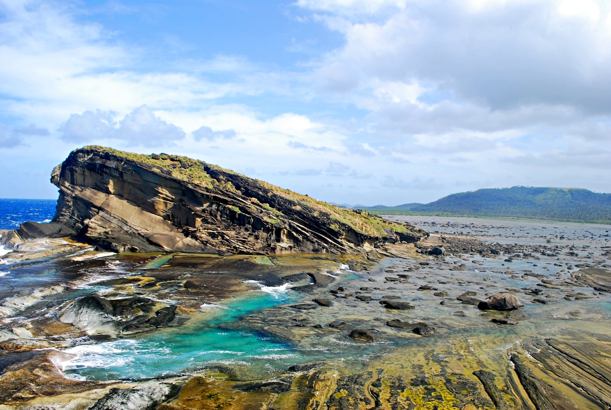

Reviews
Biri Island, Samar 5 STARS
This should be one of your top go to places in the Philippines. Definitely the rock formations will leave you in awe and the travel time is definitely worth it. The locals are very helpful and hospitable. Also, it would be best for you to get a tour guide and I can assure you that they can take great photos with your cellphones.
White Island, Camiguin 4.5 STARS
Highly recommend and so beautiful sight gazing back to Camigiun Island from White Island, which is a large sand bar.